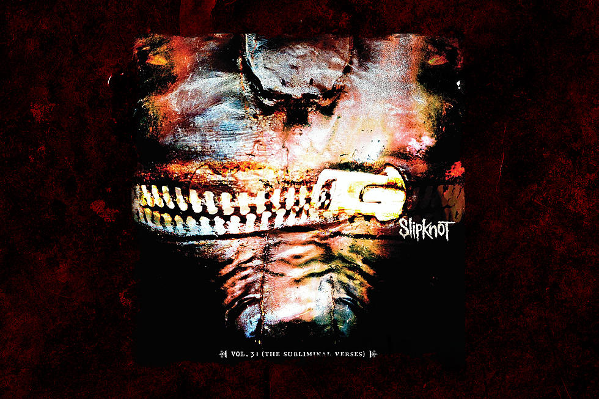
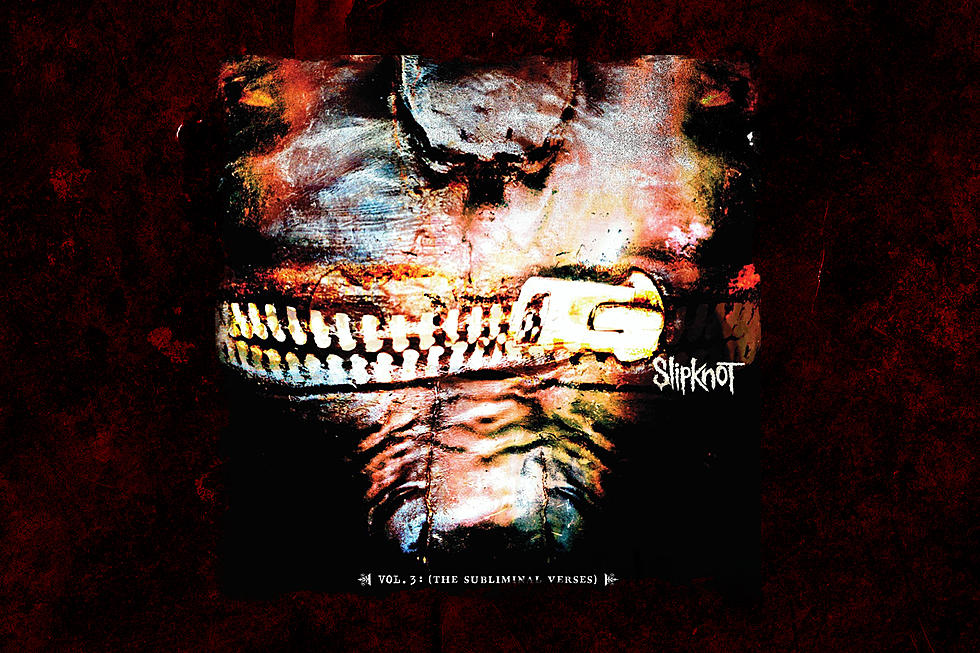

Slipknot
1999
2 millones de copias

Iowa
2001
2.5 millones de copias

Vol. 3: (The Subliminal Verses)
2004
5 millones de copias
All Hope Is Gone
2008
1.5 millones de copias
.5: The Gray Chapter
2014
1.2 millones de copias

Biografía: |
Slipknot es una banda de metal alternativo estadounidense formada en Des Moines, Iowa, en 1995. La banda está compuesta por nueve miembros, cada uno de los cuales toca un instrumento único y utiliza una máscara distintiva durante las presentaciones en vivo. La formación original de la banda incluía a Shawn Crahan, Joey Jordison y Paul Gray, entre otros. El primer álbum homónimo de la banda, "Slipknot", fue lanzado en 1999 y recibió críticas positivas. La banda se destacó por su imagen y estilo distintivos, incluyendo máscaras y trajes extravagantes. Slipknot continuó ganando popularidad con álbumes posteriores como "Iowa" y "Vol. 3: (The Subliminal Verses)". Desafortunadamente, en 2010, Paul Gray falleció por una sobredosis de drogas, lo que dejó a la banda devastada. Slipknot ha continuado tocando y lanzando música, incluyendo su álbum más reciente, "We Are Not Your Kind", lanzado en 2019. |
Géneros Musciales: |
Canción más Escuchada: |
Discografía: |
|
Slipknot |
1999 |
2 millones de copias |
|
Iowa |
2001 |
2.5 millones de copias |
 |
Vol. 3: (The Subliminal Verses) |
2004 |
5 millones de copias |
All Hope Is Gone |
2008 |
1.5 millones de copias |
|
.5: The Gray Chapter |
2014 |
1.2 millones de copias |
|
|
We Are Not Your Kind |
2019 |
2 millones de copias |
The End, So Far |
2022 |
1 millones de copias |
Cónoce más sobre Slipknot: |

|

|

|

|

|